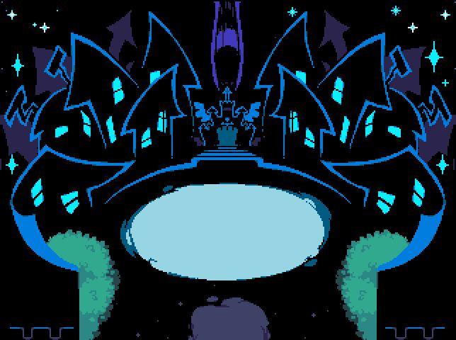
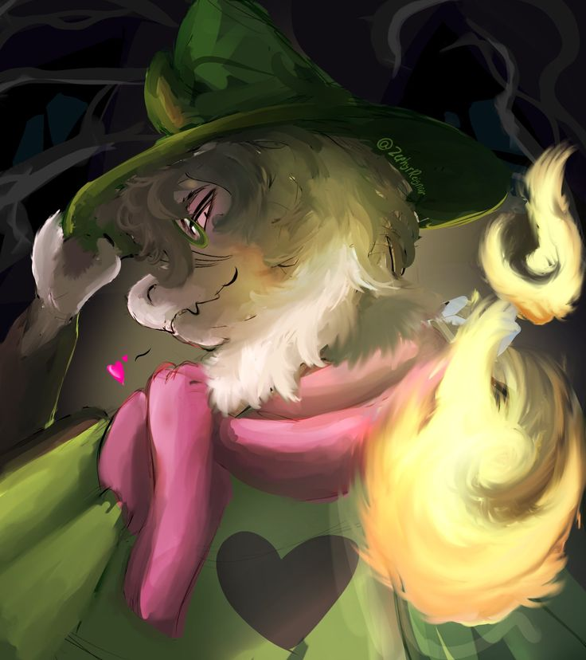
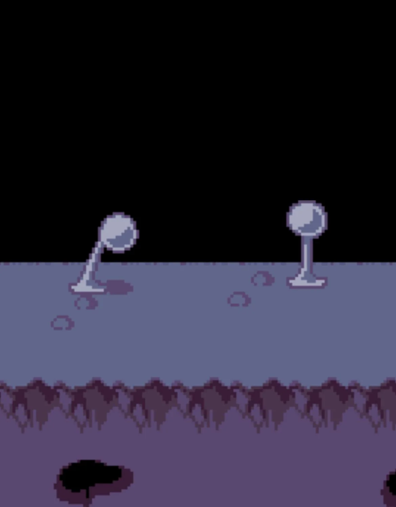

SCP-9722: The Dark World.
SPECIAL CONTAINMENT PROCEDURES:

SCP-9722-A is to be guarded by two security personnel with LEVEL-2 clearance, under the pretense that they are security guards at Hometown Academy. All access to SCP-9722-A must be authorized by Dr. Malakai Adebayo and logged. All personnel entering SCP-9722-A must wear a body camera and a tracker, and must be escorted by security personnel to prevent incidents inside SCP-9722-B. Any equipment brought on an expedition that is not required by these special containment procedures must be recorded in the expedition log. SCP-9722-1 instances are to remain contained inside SCP-9722-B until further notice, and all interactions with them must be logged. Personnel may interact with SCP-9722-2 instances only with authorization from Dr. Malakai Adebayo. Any samples taken from SCP-9722-2 must be logged and stored in a secure location inside ██████ Hometown, United States of America.
DESCRIPTION:

SCP-9722-A is a school supply closet located within Hometown Academy. Its interior is completely dark and has a temperature of 10°C. SCP-9722-A is a dimensional gateway to SCP-9722-B. The exact mechanism and physics behind SCP-9722-A are unknown. It is theorized that SCP-9722-A produces a negative-photon effect—or, in simple terms, negative light. This may have caused the creation of SCP-9722-B, which could be considered an alternate dimension. SCP-9722-A leads to the town inside SCP-9722-B, which is called "Castletown." SCP-9722-1 instances inhabit Castletown. Given their numbers, it is impossible to catalogue all the species currently living inside SCP-9722-B. The region may be an entire ecosystem that has yet to be discovered.
SCP-9722-1-A:

One special instance of SCP-9722-1 is SCP-9722-1-A, a goat-like, anthropomorphic creature that calls itself "The Prince" or "Ralsei." SCP-9722-1-A is docile and friendly and has shown no hostility so far. In fact, it has helped the Foundation understand SCP-9722-B by describing its history and how it works. All interactions with SCP-9722-1-A must be logged, and any information it provides must be verified by Dr. Malakai Adebayo.
SCP-9722-2:

There are two regions inside SCP-9722-B: Castletown and the Dark Cliffs. The Dark Cliffs consist of gray rock similar to stone found in the human world, along with dust. Symbols depicting eyes and other unfamiliar designs are engraved in some areas. SCP-9722-2 instances live in the Dark Cliffs. They are white thaumaturgical plants that shoot petals at anyone nearby. These plants are still undergoing research and chemical analysis.
The DELTA-RUNE:
The DELTA-RUNE is a symbol associated with a religion that originated among monsters and centers on an entity called "The Angel." This symbol has been seen multiple times inside SCP-9722-B, both on the Dark Cliffs and in Castletown. The three triangles in the symbol are theorized to represent "The Human" (Kris Dreemur), "The Monster" (Susie ██████), and "The Prince" (Ralsei). The symbol is directly tied to "The Prophecy."
The Prophecy:
The following text describes a possible CK-Reality-Restructuring event.
Once upon a time, a LEGEND was whispered among shadows. It was a LEGEND of HOPE. It was a LEGEND of DREAMS. It was a LEGEND of LIGHT. It was a LEGEND of DARK. This is the legend of DELTA RUNE. For millennia, LIGHT and DARK have lived in balance, bringing peace to the WORLD. But if this harmony were to shatter... a terrible calamity would occur. The sky will run black with terror, and the land will crack with fear. Then, her heart pounding... the EARTH will draw her final breath. Only then, shining with hope... three HEROES appear at the WORLD'S edge. A HUMAN, a MONSTER, and a PRINCE FROM THE DARK. Only they can seal the fountains and banish the ANGEL'S HEAVEN. Only then will balance be restored, and the WORLD saved from destruction. Today, the FOUNTAIN OF DARKNESS—the geyser that gives this land form—stands tall at the center of the kingdom. But recently, another fountain has appeared on the horizon... and with it, the balance of LIGHT and DARK begins to shift...